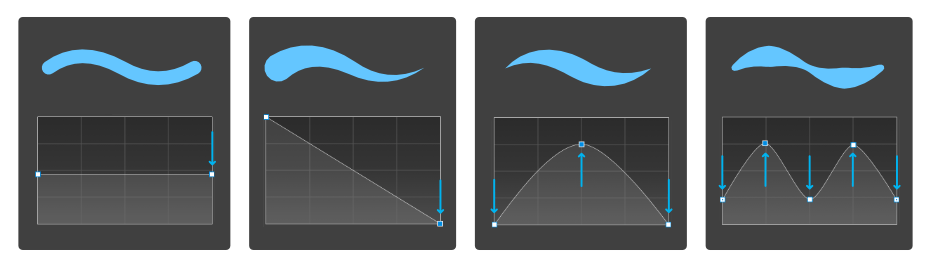

To draw freehand lines with the Pencil Tool:
- Drag on the page in the direction that you want the path to follow.
- (Optional) On the context toolbar, do one (or more) of the following:
- Enable Sculpt to reform or continue a previous pencil stroke.
- (Optional) Enable a Stabiliser to smooth the stroke using different smoothing behaviors.
- (Optional) Enable a Controller to have the stroke respond automatically to a pen tablet's Pressure input or speed of mouse movement (Velocity), or manually to the Stroke panel's Pressure profile chart (None).
Stroke stabilization and pressure sensitivity
Affinity Designer's stroke stabilizer smooths pencil lines as you draw, helping you to produce some really great effects.

A Rope stabilizer or Window stabilizer mode can be used; the former drags the stroke end by a 'rope' to smooth the stroke, but lets you introduce sharp corners at increasing rope Length (radius) values by redirecting the slackened rope; the latter will smooth the stroke by averaging sampled input positions within a Window whose size is configurable.
The stroke's variable width lines can be controlled either by velocity—most useful when drawing with a mouse—or by pressure—for use when drawing with a pressure-sensitive pen tablet.
To simulate pressure-sensitive pencil strokes:
- On the Stroke panel, click Pressure.
- From the displayed profile chart, do one of the following:
- Drag either end node downwards to reduce the stroke width uniformly along the stroke length.
- Select either end node twice (or press the ), then drag it downwards to taper the stroke in that direction. The stroke will taper linearly.
- Drag either end node downwards, then click halfway along the profile line to add a node which can be dragged upwards to taper the stroke according to the curvature of the graph.
- Drag either end node downwards, then click repeatedly along the profile line to add multiple nodes which can be positioned vertically and horizontally to form a variable width stroke.
- Repeat for other nodes as needed.
